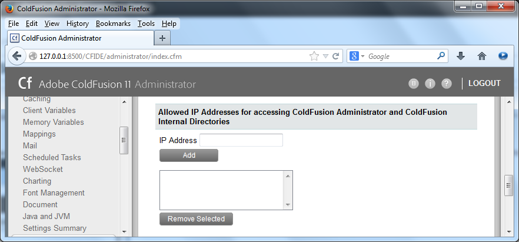

You can secure many Adobe ColdFusion resources using password authentication and configure sandbox security.
- About ColdFusion security
- Using password protection
- ColdFusion Administrator password protection
- Configurable seed for password encryption
- RDS password protection
- Enhancing ColdFusion Security on Windows
- Exposing services to users
- Configure IP address to access exposed services
- Restricting access to ColdFusion Administrator
- Enabling Secure Profile for ColdFusion Administrator
- Changes in Secure Profile (ColdFusion 11)
- Using sandbox security
About ColdFusion security
Security is especially important in web-based applications, such as those you develop in ColdFusion. ColdFusion developers and administrators must fully understand the security risks that could affect their development and runtime environments so they can enable and restrict access appropriately.
Whether you have an e-commerce site where customers enter credit card information or a global collaboration site where users share confidential data, you should understand the security risks that could threaten your web applications.
- Snooping and eavesdropping: Someone can monitor data sent over the public connections of the web.
- User impersonation: Someone can impersonate a trusted user to gain access to information that only the trusted user should see or download.
- Unauthorized access: Unauthorized users can gain access to sensitive information. This security risk is the most complex because the Internet links every computer to one large network. Completely allowing or disallowing access to a given system or data source is relatively straight-forward, but allowing the partial access required for an application to be useful remains risky. For example, a bank can easily publish a public, freely accessible site with general banking information. Creating an account maintenance site where users have exclusive access to their own personal account information is more difficult.
ColdFusion provides a highly secure environment for web application development and deployment. It helps you reduce security risks in the following ways: - Encryption: Use of the Secure Sockets Layer (SSL) protocol prevents snooping, eavesdropping, and message tampering as information passes between clients and servers. SSL, which is supported by most web servers, encrypts Internet protocols (such as HTTP) with public key cryptography. A private key resides on the server to decrypt inbound data and encrypt outbound data.After the key is installed, the web server automatically handles encryption and decryption.
- Authentication: Authentication checks whether someone is a valid system user. It prompts a user for a unique login or user name, and a password or personal identification number (PIN).
- Access Control: Authenticated users have access to particular features or components based on security clearance, group affiliation, or other criteria specified by the developer.
You can implement development security by requiring a password to use the ColdFusion Administrator and a password for Remote Development Services (RDS), which allows developers to develop CFML pages remotely. You implement runtime security in your CFML pages and in the ColdFusion Administrator. ColdFusion has the following runtime security categories: - User security Programmatically determine the logged-in user and allow or disallow restricted functionality based on the roles assigned to that user. For more information about user security, see ColdFusion security features in Securing Applications in the Developing ColdFusion Applications.
Sandbox security Using the ColdFusion Administrator, define the actions and resources that the ColdFusion pages in and below a specified directory can use.

Note In ColdFusion 11, you can configure multiple security sandboxes irrespective of the edition that you are using. However, for the previous versions (ColdFusion 10 or older), you can configure multiple security sandboxes only when you are using the Enterprise Edition.
The Security area in the Administrator lets you do the following tasks:
- Configure password protection for the ColdFusion Administrator. For more information, see Using password protection.
- Configure password protection for RDS access. For more information, see RDS password protection.
- Enable, disable, and customize ColdFusion security, on the Security > Sandbox Security page (called Resource Security page in the Standard edition). For more information, see Using sandbox security.
#back to top
Using password protection
Password protection restricts access to the ColdFusion Administrator and to a ColdFusion server when you attempt access through RDS security.
ColdFusion Administrator password protection
Secure access to the ColdFusion Administrator is enabled by default. The password that you enter during installation is saved as the default. You are prompted to enter this password whenever you open the Administrator.
Password protection for accessing the Administrator helps guard against unauthorized modifications of ColdFusion, and Adobe recommends using passwords. You can disable or change the Administrator password on the Security > CF Admin Password page.
Configurable seed for password encryption
You can specify a new seed value to encrypt data source passwords.
To modify the default seed value assigned by ColdFusion or to change the value you specified,
- In the ColdFusion Administrator, got to Security > Administrator and then in the Password Seed section, specify the new seed value between 8-500 characters.
Click Submit Changes.
Note When you modify the seed value, all data source connections are reset. Therefore, Adobe recommends that you perform this task when the server is idle or at the initial phase (after installation).
RDS password protection
If you configured password protection for RDS access when you installed ColdFusion, you are prompted for the password when you attempt to access ColdFusion from Dreamweaver MX 2004, HomeSite+, or the ColdFusion Report Builder.
You can disable RDS or change the RDS password on the Security > RDS Password page.
| Note Disabling RDS also disables the applet that the ColdFusion Administrator uses in file-related dialog boxes. |
If you use RDS security, you rely on web server and operating system security settings to set permissions for ColdFusion application and document directories.
Enhancing ColdFusion Security on Windows
To enhance security for the ColdFusion server on Windows, restrict access to the following files to selected ColdFusion users:
- /cfusion/lib/seed.properties
- /cfusion/lib/password.properties
- /cfusion/lib/license.properties
- /cfusion/bin/passwordreset.bat
- /cfusion/bin/cf-passwordreset.jar
#back to top
Exposing services to users
ColdFusion exposes many existing enterprise services as web services. You can access these services using SOAP and AMF/Flash remoting.
The following are the exposed services:
- cfpdf
- cfImage
- cfdocument
- cfmail
- cfpop
- cfchart
- upload service
You can secure the exposed services to prevent access by unknown applications or users. This can be done by configuring the client IP address range to which services are accessible. Also, you can set up user access control for the services.
On the Security > User Manager page, you can select the services available to a user from the Exposed Services section.
By default, all the services are listed in the Prohibited Services drop-down list. Press CTRL and select the services that you want the user to avail and click the << button.
Now, click Edit User to implement the changes to the user settings.
#back to top
Configure IP address to access exposed services
To configure IP addresses to access exposed services:
- Go to Security > Allowed IP Addresses
- To add an IP address, specify the IP address in the IP addresses field and click Add.
- To remove an IP address, select the IP address from the View/Remove Selected IP Addresses for Exposed Services list.
- Click Remove Selected to remove the IP addresses.
#back to top
Restricting access to ColdFusion Administrator
You can restrict access to ColdFusion Administrator.
| Note By default, localhost and all IP addresses can access ColdFusion server. |
To add IP addresses that must be allowed access:
- Go to Security > Allowed IP Addresses > Add/Remove IP Addresses which will have Administrator access.
- In the IP Address text box, specify the IP addresses.
- Click Add.
- Repeat the procedures to add more IP addresses.
Regular expressions are supported. That is, if you specify10...*, all IP addresses starting with10.are allowed access.
#back to top
Enabling Secure Profile for ColdFusion Administrator
ColdFusion allows you to secure ColdFusion server furthermore by enabling or disabling selected settings on the ColdFusion Administrator. When installing ColdFusion, you can enable Secure Profile by selecting the option when prompted on the Secure Profile screen. Further, you could provide a comma separate list of IP addresses that may be allowed to access the ColdFusion Administrator.
Administrator settings affected by enabling Secure Profile
| Administrator Settings | Path | Default Admin Profile | Secure Profile | Changes to the setting post migration to ColdFusion 10 |
|---|---|---|---|---|---|
1 | Use UUID for cftoken | Server Settings > Settings | Enabled | Enabled | Overwritten |
2 | Disable access to internal ColdFusion Java components | Server Settings > Settings | Disabled | Enabled | Overwritten |
3 | Enable Global Script Protection | Server Settings > Settings | Enabled | Enabled | Overwritten |
4 | Maximum size of post data | Server Settings > Settings | 20MB | 20MB | Overwritten |
5 | Missing Template Handler | Server Settings > Settings | No Value | Custom missing error template | Retained if specified |
6 | Site-wide Error Handler | Server Settings > Settings | No Value | Custom site-wide error template | Retained if specified |
7 | Request Queue Timeout Page | Server Settings > Request Tuning | No value | Custom error template | Retained if specified |
8 | Cookie Timeout | Server Settings > Memory Variables | 15767000 minutes | 1440 minutes | N/A |
9 | Disabling updating of ColdFusion internal cookies using ColdFusion tags/functions | Server Settings > Memory Variables | Disabled | Enabled | N/A |
10 | Enable WebSocket Server | Server Settings > WebSocket | Enabled | Disabled | N/A |
11 | Start Flash Policy Server | Server Settings > WebSocket | Enabled | Disabled | N/A |
12 | Allowed SQL (all settings) | Data & Services > Data Sources > database > Advanced Settings | Enabled | Create, Drop, Alter, Grant, Revoke, Stored Procedures are disabled | Retained if specified |
13 | Enable Robust Exception Information | Debugging & Logging > Debug Output Settings | Disabled | Disabled | Overwritten |
14 | Enable CFSTAT | Debugging & Logging > Debug Output Settings | Enabled | Disabled | Overwritten |
15 | Select the type of Administrator authentication | Security > Administrator | Use a single password only | Separate user name and password authentication (allows multiple users) | N/A |
16 | Enable RDS Service | Security > RDS | Configurable at install time | Disabled | N/A |
17 | Select the type of RDS authentication | Security > RDS | Use a single password only | Separate user name and password authentication (allows multiple users) | N/A |
18 | Enable ColdFusion Sandbox Security | Security > Sandbox Security | Disabled | Disabled | Overwritten |
19 | Allowed IP addresses for ColdFusion Administrator access | Security > Allowed IP Addresses | Not available at install time | Available at install time | N/A |
| Note Secure Profile disables Directory Browsing for a stand alone ColdFusion installation with built-in web server. |
COMMUNITY CONTRIBUTED HELP
The page above explains that if the "secure profile" option is taken during installation, ColdFusion will set the 3 error handlers to a value that is shown above merely as "Custom missing error template".
More specifically, and particularly if anyone may remove them from the CF Admin and need to add them back, the three templates can be found in this directory in your installation: C:\ColdFusion10\cfusion\wwwroot\CFIDE\administrator\templates, and are named (in the order listed above):
- secure_profile_error.cfm
- missing_template_error.cfm
- request_timeout_error.cfm
So for instance, to put the "default" "secure" sitewide error handler back in place, provide this value for the CF Admin>Settings>Site-wide Error Handler:
- /CFIDE/administrator/templates/secure_profile_error.cfm
Changes in Secure Profile (ColdFusion 11)
When installing ColdFusion Server, you can enable Secure Profile by selecting the option when prompted on the Secure Profile screen. Further, you could provide a comma separate list of IP addresses that may be allowed to access the ColdFusion Administrator. This feature has been available from ColdFusion 10. In ColdFusion 11, Secure Profile has been enhanced to handle access to other internal components too. For instance, you can set restrictions for following URLs:
- CFIDE/main/*
- CFIDE/adminapi/*
- CFIDE/administrator/*
- CFIDE/componentutils/*
- CFIDE/wizards/*
- CFIDE/servermanager/*
To allow IP addresses to access the internal ColdFusion components, perform the following tasks:
- Login to ColdFusion Administrator
- Click Security > Allow IP Addresses
- Go to Allow IP Addresses for accessing ColdFusion Administrator and ColdFusion Internal Directories section and add grant access to individual IP address to access the internal components as shown in the following figure:

If you have configured an external web server, you can also restrict access to the ColdFusion Administrator and ColdFusion Internal Directories at the connector-level by modifying the iprestriction.properties file available under the connector folder. For instance, <cf_root>/config/wsconfig//iprestriction.properties.
| Note : You will need to restart the external web server after modifying the iprestriction.properties file. |
For more information, see this document.
Using sandbox security
Sandbox security (called Resource security in the Standard Edition) uses the location of your ColdFusion pages to control access to ColdFusion resources. A sandbox is a designated directory of your site to which you apply security restrictions. Sandbox security lets you specify which tags, functions, and resources (for example, files, directories, and data sources) can be used by ColdFusion pages located in and under the designated directory.
To use sandbox security in the J2EE editions, the application server must be running a security manager (java.lang.SecurityManager) and you define the following JVM arguments (for Tomcat, this is the java.args line in the cf_root/cfusion/bin/jvm.config file):
-Djava.security.manager "-Djava.security.policy=cf_root/WEB-INF/cfusion/lib/coldfusion.policy" "-Djava.security.auth.policy=cf_root/WEB-INF/cfusion/lib/neo_jaas.policy"
| Note Sandbox security is not enabled by default. You enable it on the Security > Sandbox Security page before ColdFusion enforces the settings. |
Using multiple sandboxes (Enterprise Edition only)
By default, a subdirectory of a sandbox inherits the settings of the directory one level above it. However, if you define a sandbox for a subdirectory, the subdirectory no longer inherits settings from the parent, completely overriding the parent directory's sandbox settings. For example, consider the following directories:
C:\Inetpub\wwwroot C:\Inetpub\wwwroot\sales C:\Inetpub\wwwroot\rnd C:\Inetpub\wwwroot\rnd\dev C:\Inetpub\wwwroot\rnd\'a
If you define a sandbox for the wwwroot directory, the settings also apply to the sales and rnd directories. If you also define a sandbox for the rnd directory, the rnd sandbox settings also apply to the dev and qa directories. The wwwroot and sales directories maintain their original settings, and the rnd settings override the wwwroot directory settings for the rnd directory and subdirectories.
This hierarchical arrangement of security permits the configuration of personalized sandboxes for users with different security levels. For example, if you are a web hosting administrator who hosts several clients on a ColdFusion shared server, you can configure a sandbox for each customer. This prevents one customer from accessing the data sources or files of another customer.
Resources that you can restrict
You can restrict the following resources:
- Data Sources Restrict the use of ColdFusion data sources.
- CF Tags Restrict the use of ColdFusion tags that manipulate resources on the server (or on an external server), such as files, the registry, Lightweight Directory Access Protocol (LDAP), mail, and the log.
- CF Functions Restrict the use of ColdFusion functions that access the file system.
Files/DirsEnable tags and functions in the sandbox to access files and directories outside the sandbox.
Note To use the Administrator API when sandbox security is enabled, allow access to the cf_web_root/CFIDE/adminapi directory.
Server/PortsSpecify the servers, ports, and port ranges that the ColdFusion tags that call third-party resources can use.For more information, see the Administrator online Help.
Note When you run ColdFusion in the J2EE configuration on IBM WebSphere, the Files/Dirs and Server/Ports tabs are not enabled.
About directories and permissions
When you enable access to files outside the sandbox, you specify the filename. When you enable access to directories outside the sandbox, you specify directoryname_indicator_, where indicator is a dash or asterisk, as follows:
- A backslash followed by a dash (-) lets tags and functions access all files in the specified directory, and recursively allows access to all files in subdirectories.
- A backslash followed by an asterisk (*) lets tags and functions access all files in the specified directory and also lets tags and functions access a list of subdirectories. However, this option denies access to files in any subdirectories.
You can also specify the actions that ColdFusion tags and functions can perform on files and directories outside the sandbox. The following table shows the relationship between the permissions of a file and a directory:
Permission | Effect on files | Effect on directories |
|---|---|---|
Read | View the file | List all files in the directory |
Write | Write to the file | Not applicable |
Execute | Execute the file | Not applicable |
Delete | Delete the file | Delete the directory |
Add a sandbox (Enterprise Edition only)
ColdFusion Enterprise Edition lets you define multiple security sandboxes.
- Open the Security > Sandbox Security page in the ColdFusion Administrator. The Sandbox Security Permissions page appears.
- In the Add Security Sandbox box, enter the name of the new sandbox. This name must be either a ColdFusion mapping (defined in the Administrator) or an absolute path.
- Select New Sandbox from the drop-down list to create a sandbox based on the default sandbox, or select an existing sandbox to copy its settings to your new sandbox.
- Click Add. The new sandbox appears in the list of Defined Directory Permissions.
Configure a sandbox
Before you begin security sandbox configuration, analyze your application and its usage to determine the tags, functions, and resources that it requires. You can then configure the sandbox to enable access to the required resources and disable use of the appropriate tags and functions. For example, if the applications in the sandbox do not use the cfregistry tag, you can safely disable it.
| Note In the Standard Edition, the Root Security Context is the only sandbox without any initial list of defined directory permissions. |
- Open the Security > Sandbox Security page (Security > Resource Security page in the Standard Edition) in the ColdFusion Administrator.
- (Enterprise Edition only) In the list of Defined Directory Permissions, click the name or Edit icon for the directory.A page with several tabs appears. This is the initial page in the Standard Edition. The remaining steps describe the use of each tab.
To disable a data source, in the left column of the Datasources tab, highlight the data source, and click the right arrow.By default, ColdFusion pages in this sandbox can access all data sources.
Note If <<ALL DATASOURCES>> is in the Enabled Datasources column, any data source that you add is enabled. If you move <<ALL DATASOURCES>> to the Disabled Datasources column, any new data source is disabled.
- Click the CFTags tab.
- To disable tags, in the left column of the CFTags tab, highlight the tags, and click the right arrow.By default, ColdFusion pages in this sandbox can access all listed tags.
- Click the CFFunctions tab.
- To disable functions, in the left column of the CFFunctions tab, highlight the functions, and click the right arrow.By default, ColdFusion pages in this sandbox can access all listed functions.
- Click the Files/Dirs tab.
- To enable files or directories, in the File Path box, enter or browse to the files or directories; for example, C:\pix. A file path that consists of the special token <<ALL FILES>> matches any file. For information on using the backslash-hyphen (-) and backslash-asterisk (*) wildcard characters, see About directories and permissions.
- Select the permissions.For example, select the Read check box to let ColdFusion pages in the mytestapps sandbox read files in the C:\pix directory.
- Click Add Files/Paths. When you edit an existing sandbox, this button reads Edit Files/Paths. The file path and its permissions appear in the Secured Files and Directories list.
In the Secured Files and Directories list, verify that the file path is correct. The character after the backslash is important. For information, see About directories and permissions.
Note The Files/Dirs tab works together with the file-based permissions of the operating system. To restrict a user from browsing another user's directory, use file-based permissions.
- Click the Server/Ports tab.
To turn off default behavior (global access to all servers and ports), enter the IP addresses and port numbers that pages in this sandbox can connect to by using tags that access external resources (for example,
cfmail,cfpop,cfldap,cfhttp, and so on). You can specify an IP address, a server name (such as www.someservername.com), or a domain name (such as someservername.com). You can optionally specify a port restriction.Note This behavior differs from other tabs, such as CFTags, where you select items to disable. If you set any values in this tab, external-resource tags executed in this sandbox can access only the specified servers and ports.
For example, to allow this sandbox access to 207.88.220.3 on ports 80 and lower, perform the following steps:
- In the IP Address field, enter 207.88.220.3.
In the Port field, enter 80, and click This Port and Lower.
Note To deny access by these ColdFusion tags to an entire site, enable access for a local resource, such as your local mail server, FTP server, and so on.
- Click Finish to save changes to the sandbox.
Sandbox Considerations
Using OpenOffice within Sandbox
Grant permissions in sandbox for the following filepaths:
- D:\ColdFusion10\cfusion\runtime\servers\lib Read
- D:\ColdFusion10\cfusion\runtime\servers\lib- Read
- D:\ColdFusion10\cfusion\runtime\lib- Read
- D:\ColdFusion10\cfusion\runtime\lib Read
- C:\Program Files\OpenOffice.org 3\ Read, Execute
- C:\Program Files\OpenOffice.org 3- Read
, Execute
Using Caching within Sandbox
For disk-based caching to work inside a sandbox, the sandbox must provide read/write permission to the disk cache directory. This can be the default directory (java.io.tmpdir) or a user-configured directory as identified by the diskStore property. The diskStore property in cf_root\lib\ehcache.xml is used to specify the directory for disk cache (<diskStore path="java.io.tmpdir"/>).Use the following code to identify the temp directory:
<cfscript>
writeoutput("Temp Dir : " & createobject("java","java.lang.System").getProperty("java.io.tmpdir") );
</cfscript>
Also, read permission must be granted to cf_root\lib\ehcache.xml for certain functions that read from/write to ehCache.xml to work. For example, cacheGetProperties and cacheSetProperties.
Using Service CFCs within Sandbox
Grant the following permissions:
- execute permission to cf_root\CustomTags\com\adobe\coldfusion
- read permission to cf_root\WEB-INF\cftags\META_INF\taglib.tld
{kind=link}
{kind=link}